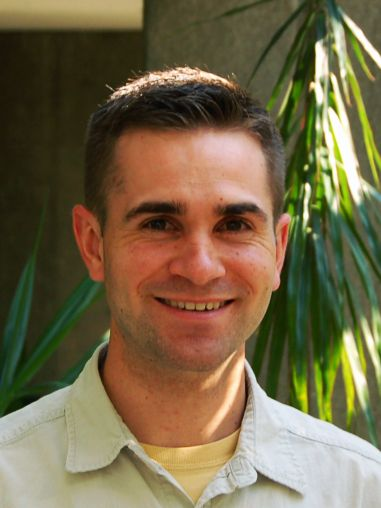

|
 |
Sean CrosbyUW-Madison Computer Science Department |
Email: <my name as found in the current url>@cs.wisc.edu
I graduated with my masters from the Computer Science Department at the University Of Wisconsin, Madison in May 2010.
My research interest is in data management with emphasis in information extraction and information integration systems. I studied under Associate Professor AnHai Doan. As a member of the DBLife project team I was an implementer on DBLife 2.0 and wrote my master's thesis on building DBLife 2.0.
I completed my undergrad at Utah Valley University
Visit my personal (and usually outdated) blog at http://seancrosby.blogspot.com/.
CS564 - Database Management Systems: Design and Implementation
CS547 - Computer Systems Modeling Fundamentals
CS784 - Advanced Topics in Database Management Systems
EPD597 - Technical and Professional Communication
CS736 - Advanced Operating Systems
CS764 - Topics in Database Management Systems
CS739 - Distributed Systems
Fall 2008 and Spring 2009: CS302 TA/instructor
Recipient of the 2009 Outstanding Graduate Student Instructor Award
Teaching OS Design Through Implementation of a Simulated Operating System, Todd Peterson and Sean Crosby, The Journal of Computing Sciences in Colleges, vol. 23, no. 1, October 2007.
October 2007 - Sixteenth Annual Rocky Mountain Conference of the Consortium for Computing Sciences in Colleges